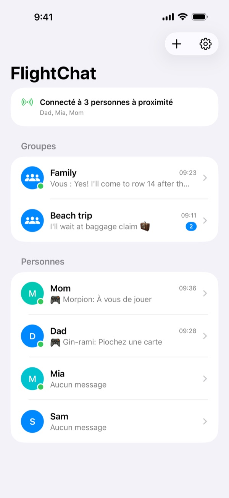
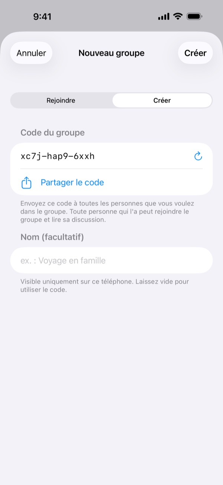
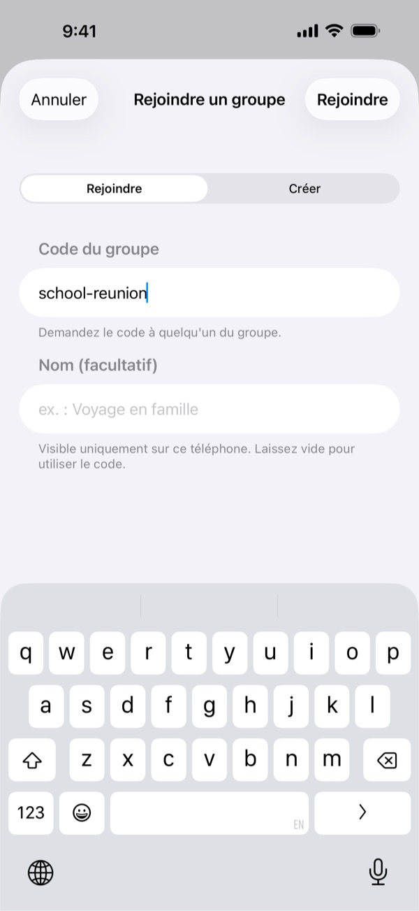
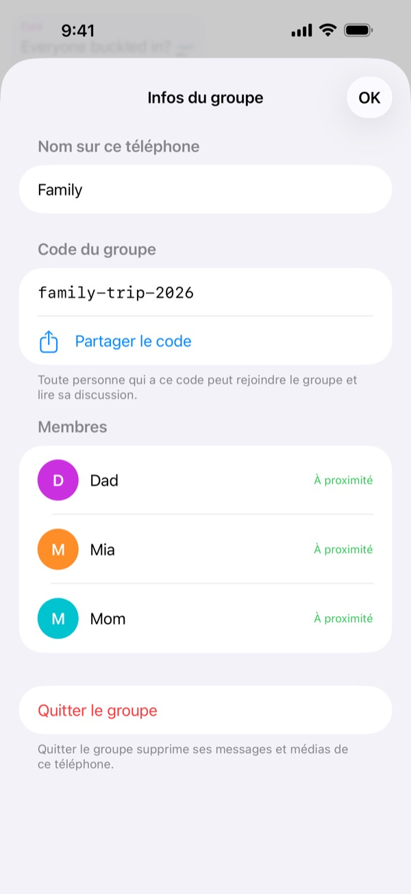
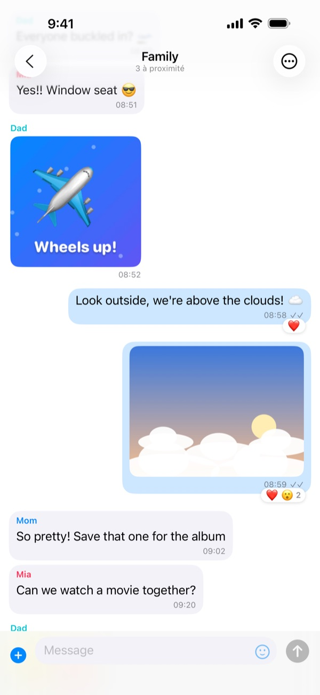
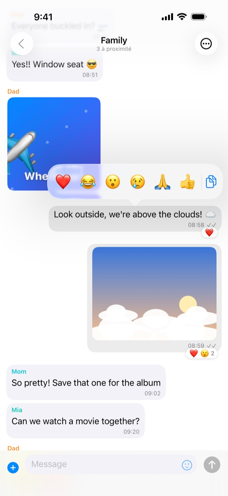
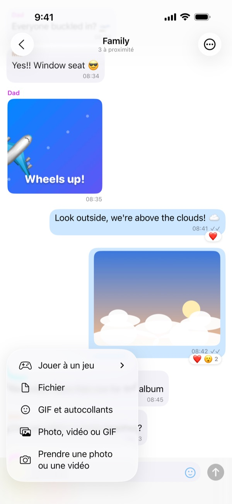
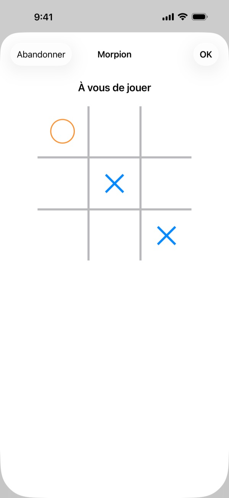
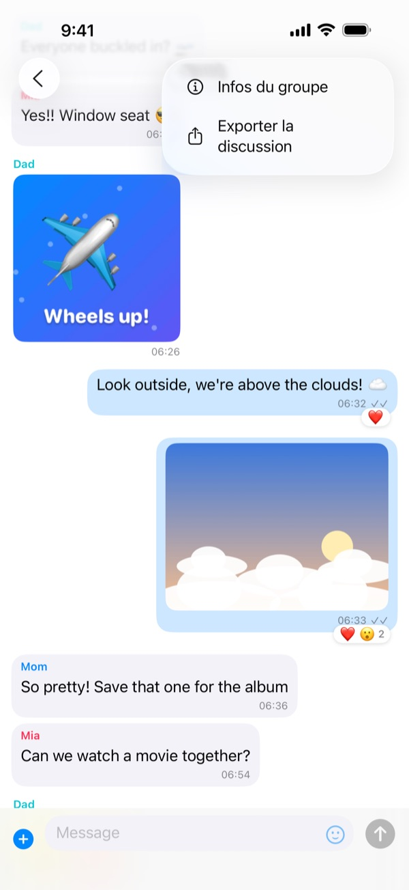

Avant le vol
Préparez tout pendant que vous êtes ensemble, à la maison ou à la porte d'embarquement :
- Installez FlightChat sur chaque téléphone du groupe.
- Une personne crée un groupe et partage son code avec les autres, par exemple par SMS.
- Les autres rejoignent le groupe avec ce code.
- Envoyez un message de test et vérifiez que tout le monde le reçoit.
À la première ouverture, autorisez FlightChat à trouver des appareils sur votre réseau local. Sans cela, il ne peut pas trouver votre groupe.
Dans l'avion
- Activez le mode Avion comme d'habitude.
- Ouvrez le centre de contrôle et réactivez le Wi-Fi et le Bluetooth. Inutile de vous connecter à un réseau.
- Ouvrez FlightChat. Le haut de la liste des discussions indique qui est connecté.
Les téléphones ne se connectent que lorsque FlightChat est ouvert. Quand vous revenez dans l'app, ils se reconnectent d'eux-mêmes et récupèrent tout ce qu'ils ont manqué.

Groupes
Un groupe est une discussion commune pour tous ceux qui saisissent le même code. Vous pouvez faire partie de 10 groupes à la fois, par exemple un pour votre famille et un pour des amis sur le même vol, et rester connecté à tous.
Créer un groupe
- Dans la liste des discussions, touchez +, puis Créer.
- FlightChat génère un code difficile à deviner. Donnez un nom au groupe si vous le souhaitez.
- Touchez Partager le code pour l'envoyer aux autres, puis Créer. Vous pourrez aussi le partager plus tard depuis Infos du groupe.
Rejoindre un groupe
Touchez +, puis Rejoindre, et saisissez le code qu'on vous a donné. Les majuscules n'ont pas d'importance.
Renommer, partager ou quitter un groupe
Ouvrez la discussion du groupe, touchez ⋯, puis Infos du groupe. Vous pouvez y changer le nom du groupe sur votre téléphone, voir et partager son code, voir ses membres ou le quitter. Quitter un groupe supprime ses messages et médias de votre téléphone.
Gardez les codes secrets. Toute personne qui a le code peut rejoindre le groupe et lire sa discussion.



Discuter
- Discussions de groupe et individuelles : chaque groupe a sa propre discussion. Personnes liste tous ceux avec qui vous partagez un groupe. Pour écrire en privé à quelqu'un, touchez son nom.
- Photos, vidéos, GIF et fichiers : touchez + à côté du champ de message. Choisissez Prendre une photo ou une vidéo pour utiliser l'appareil photo (vidéos jusqu'à 2 minutes), ou choisissez un élément existant. Touchez le smiley pour les autocollants et les GIF.
- Réactions : maintenez le doigt sur un message, puis choisissez un emoji. Vous pouvez aussi copier le texte depuis ce menu.
- Plein écran : touchez une photo ou une vidéo. Tournez le téléphone pour l'agrandir. Utilisez le bouton de partage pour l'enregistrer.
- Coches : ✓ signifie que le message est enregistré et envoyé aux personnes connectées. ✓✓ signifie que tous ses destinataires l'ont reçu.
- Pas à proximité ? Les messages aux personnes non connectées partent dès la reconnexion.



Jeux
Faites une partie rapide avec quelqu'un dans une discussion individuelle : touchez +, puis Jouer à un jeu, et choisissez. Une carte de jeu apparaît dans la discussion pour vous deux ; touchez-la pour jouer. À la fin, touchez Revanche pour rejouer, l'autre personne commençant.
- Morpion : placez ✕ et ◯ à tour de rôle. Trois alignés gagnent.
- Quatre en ligne : lâchez des jetons dans une colonne à tour de rôle. Quatre alignés, horizontalement, verticalement ou en diagonale, gagnent.
- Pierre-feuille-ciseaux : vous choisissez tous les deux en même temps. Aucun téléphone ne voit le choix de l'autre avant que vous ayez choisi tous les deux.
Les parties ne sont envoyées qu'à l'autre joueur. Si l'un de vous s'éloigne, la partie attend et reprend dès que vos téléphones se reconnectent.

Exporter une discussion
Ouvrez la discussion, touchez ⋯, puis Exporter la discussion. FlightChat crée un fichier ZIP avec la conversation en texte et les photos, vidéos et fichiers présents sur votre téléphone. Enregistrez-le dans Fichiers, envoyez-le par AirDrop ou par e-mail une fois de nouveau en ligne.

Bloquer et signaler
- Dans une discussion individuelle : touchez ⋯, puis Bloquer ou signaler.
- Dans une discussion de groupe : maintenez le doigt sur son message, puis touchez la main.
- Vous ne voyez plus ses messages et cette personne ne peut plus vous écrire. Elle n'en est pas informée.
- Signaler et bloquer nous envoie aussi un signalement par e-mail. Nous répondons sous 24 heures.
- Débloquez des personnes dans Réglages → Personnes bloquées.
Une personne bloquée qui a le code du groupe peut toujours lire la discussion du groupe. Pour l'exclure complètement, créez un nouveau groupe avec les autres et quittez l'ancien.
Si vous ne vous sentez pas en sécurité à bord, prévenez immédiatement un membre de l'équipage.
Si les téléphones ne se connectent pas
- Vérifiez que le Wi-Fi et le Bluetooth sont activés dans le centre de contrôle. Le mode Avion les désactive.
- Gardez FlightChat ouvert sur les deux téléphones.
- Vérifiez que vous êtes dans le même groupe : ouvrez la discussion du groupe, touchez ⋯, puis Infos du groupe, et comparez les codes.
- Dans l'app Réglages de l'iPhone, ouvrez FlightChat et vérifiez que Réseau local est activé.
- Rapprochez-vous. Des téléphones à quelques rangées d'écart se connectent généralement ; à l'autre bout d'un grand avion, ce n'est pas toujours le cas.
- Vous venez de rejoindre un groupe ? Les téléphones qui y sont déjà vous trouvent en quelques secondes.
- Jusqu'à 8 téléphones peuvent être connectés entre eux en même temps, le vôtre compris.
Langues
FlightChat utilise la langue de votre iPhone : anglais, français, espagnol, chinois, japonais, hébreu, coréen ou arabe. L'hébreu et l'arabe se lisent de droite à gauche. Les messages, les noms et les autocollants s'affichent toujours tels qu'ils ont été envoyés. Pour choisir une langue rien que pour FlightChat, touchez la roue dentée dans la liste des discussions, choisissez une Langue, touchez Enregistrer, puis fermez et rouvrez FlightChat. Vous pouvez aussi la choisir dans l'app Réglages de l'iPhone, sous Apps → FlightChat → Langue.
Vos données
Vos messages restent sur votre téléphone et sur ceux de vos groupes. Il n'y a ni compte ni serveur. Pour tout supprimer, ouvrez Réglages et touchez Effacer l'historique. Pour en savoir plus, consultez la Politique de confidentialité et les Conditions d'utilisation (en anglais).
Contact
Un problème ou une question ? Écrivez à biomass-65-jumbo@icloud.com.